Design that communicates
Distinct visual systems, considered layouts, and interfaces that are easy to find your way around.
Independent developer · Hong Kong
I’m Ivan, a full-stack developer and entrepreneur. I turn complex ideas into useful products—with a little personality along the way.
 01 / Orbit Bento grid ↗
01 / Orbit Bento grid ↗
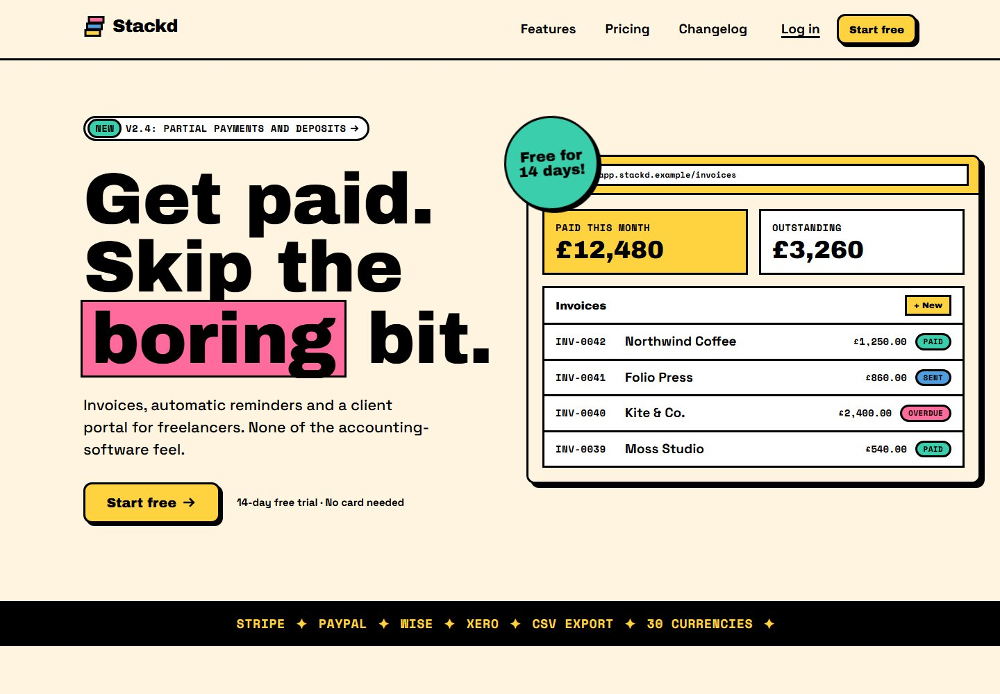
02 / Stackd Neo-brutalism ↗25projects & explorations
13distinct design languages
From the first idea
to the final interaction.
01 / The collection
Websites, useful tools, and experiments in how the web can look and feel. Every project has a story.
Try a different keyword, collection, or design style.

01 / Immersive storytellingConcept build
An e-bike launch told through scroll-driven assembly, a city ride, and a 3D configurator.
02 / Bento gridConcept build
A modular product story with colour selection, sound demos, and a layout-aware CMS studio.

03 / Dark mode / neonConcept build
A dark, developer-first API website with interactive pricing, model discovery, and searchable docs.
04 / Neo-brutalismConcept build
Freelancer invoicing with thick outlines, bright colour, and a live invoice-building demo.

05 / Minimalism / SwissConcept build
A bilingual architecture portfolio where a disciplined grid lets the work speak for itself.

06 / GlassmorphismConcept build
A calm budgeting experience with translucent surfaces and an interactive, three-persona dashboard.

07 / Organic / hand-drawnConcept build
Hand-drawn warmth meets a practical bakery pre-order, collection, and workshop-booking flow.

08 / ClaymorphismConcept build
A playful maths world with clay mascots, adaptive questions, and a thoughtful grown-up experience.

09 / EditorialConcept build
A reader-funded magazine prototype built around expressive type and art-directed long-form stories.

10 / Kinetic typographyConcept build
A type-led festival website with a personal schedule, clash detection, and an offline-ready programme.

11 / MaximalismConcept build
A gallery identity turned up to full volume, with exhibition discovery, ticket booking, and calm mode.

12 / NeumorphismConcept build
Tactile smart-home controls with accessible dials, room schedules, and real-time device-state sync.
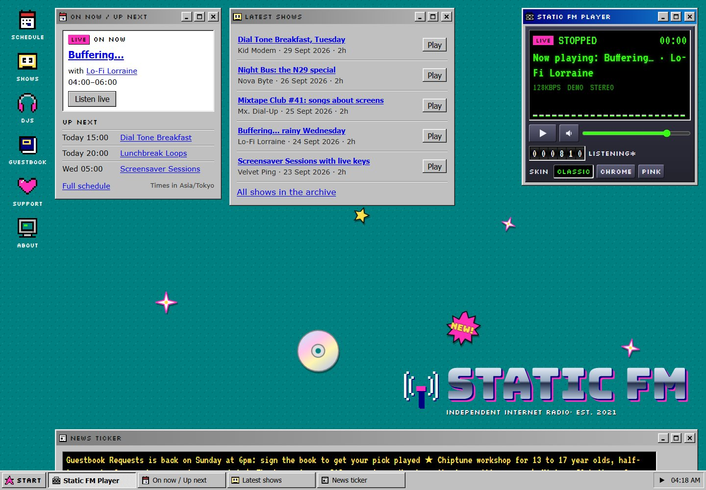
13 / Retro / Y2KConcept build
An early-web radio desktop with a persistent player, draggable windows, and a modern accessible shell.
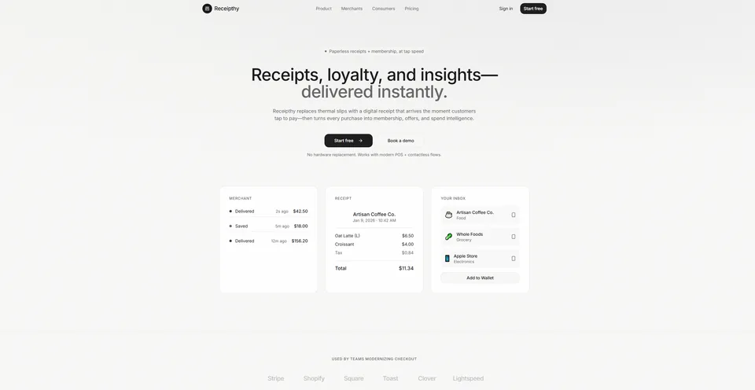
14 / Product designOriginal work
A retail product concept connecting digital receipts, loyalty, and purchase insights.
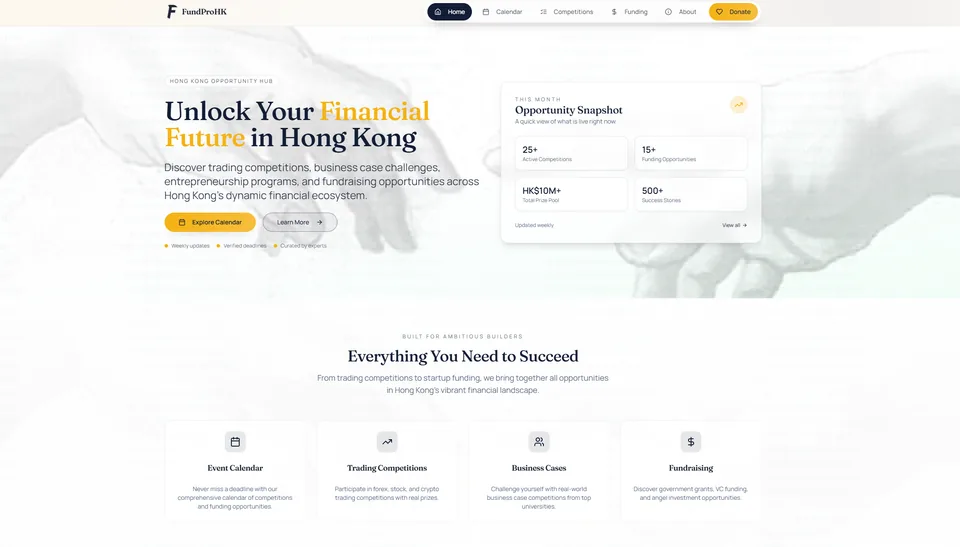
15 / Web designOriginal work
A home for funding opportunities, competitions, and the dates that matter.
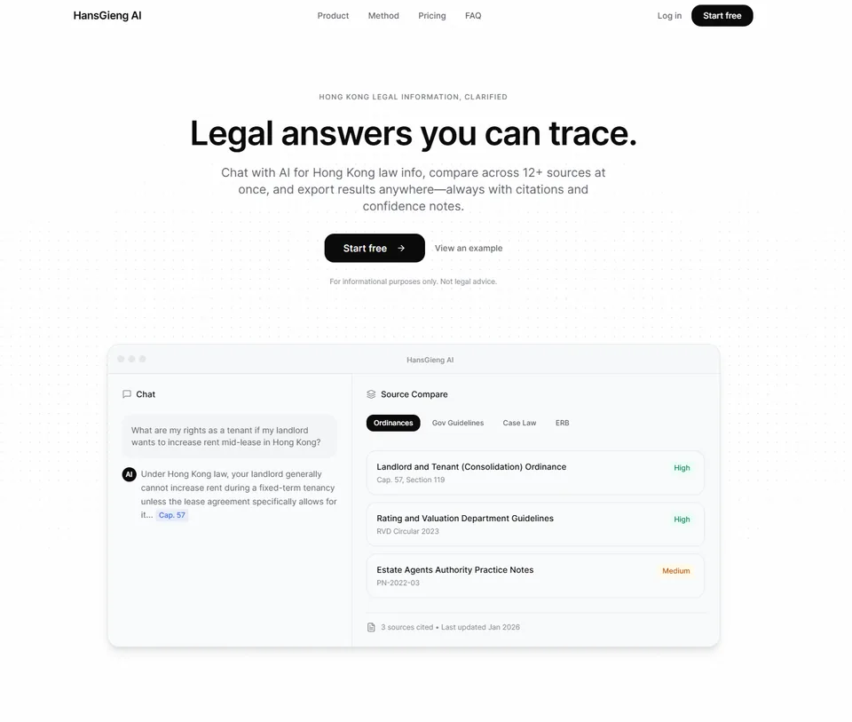
16 / AI productOriginal work
An AI SaaS concept introducing traceable answers for legal research.
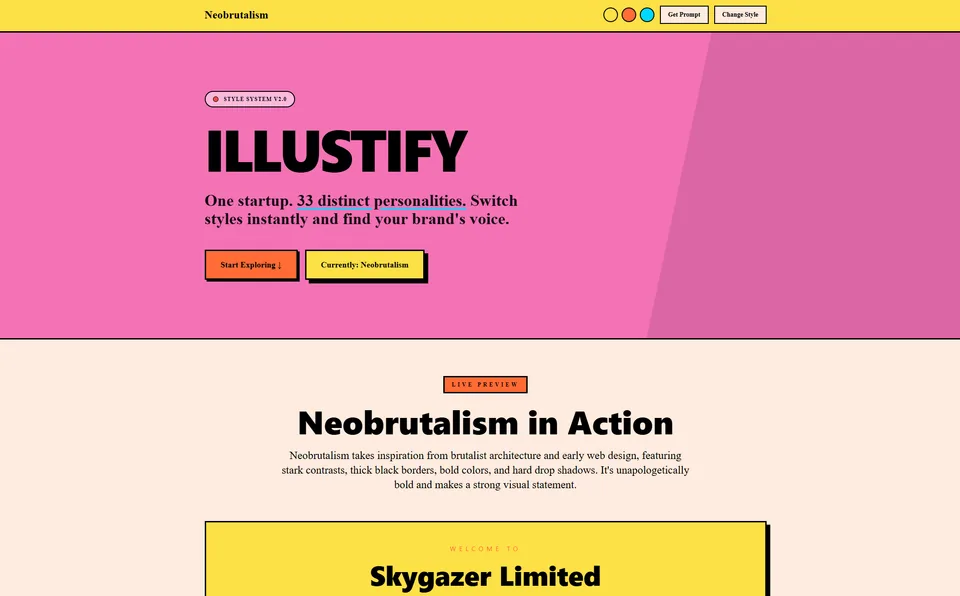
17 / Creative toolsOriginal work
A bright, expressive website for an AI image-generation prompt concept.
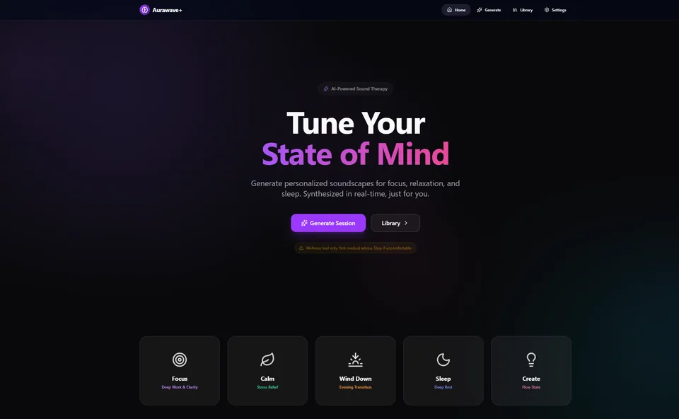
18 / Wellness productOriginal work
A dark, focused product website exploring AI-assisted sound and relaxation.
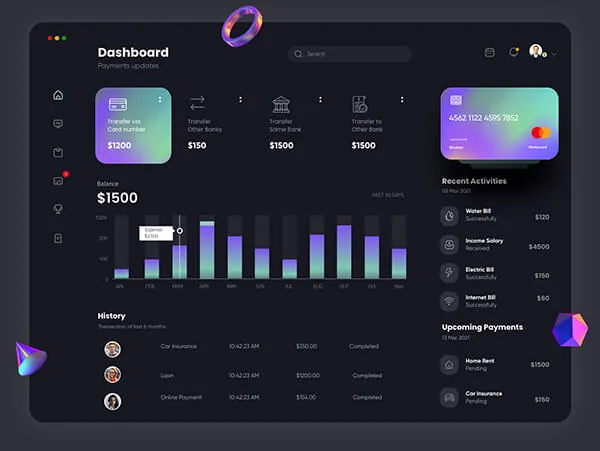
19 / DashboardOriginal work
A financial dashboard exploration for a trading-journal product.

20 / Web developmentOriginal work
A restaurant-facing website from the Memento POS project collection.
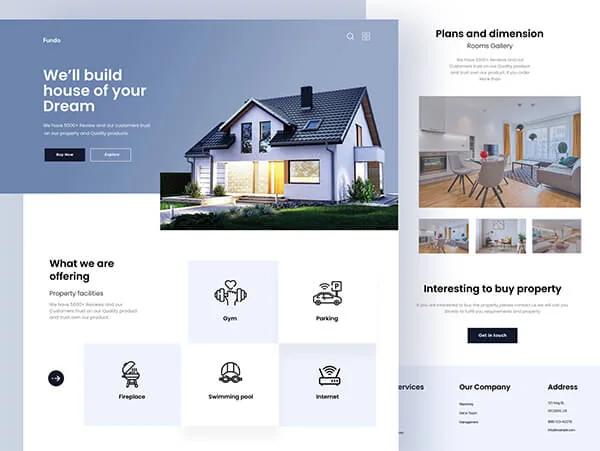
21 / Web designOriginal work
An image-led website exploration for interiors, furniture, and considered spaces.
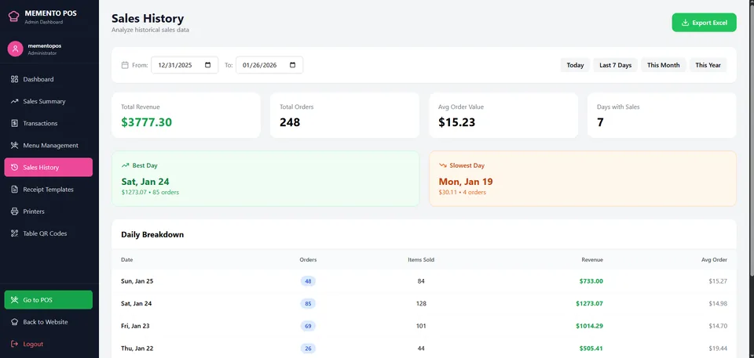
22 / DashboardOriginal work
An operational dashboard bringing sales history and transaction totals into view.

23 / Mobile appOriginal work
Weather, tea recommendations, and conversation in one mobile-app exploration.
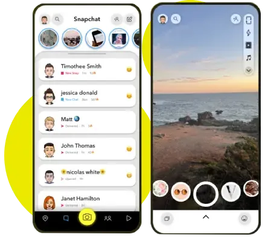
24 / Mobile appOriginal work
A mobile interface study exploring familiar camera and messaging patterns.

25 / Game developmentOriginal work
A playful whack-a-mole game with a bright pink-and-purple mobile identity.
The 13 design explorations are functional concept projects for fictional brands. Original projects retain their supplied previews. Open a project for scope, source code, and available demos.
02 / The person behind the pixels
I like the space where design, engineering, and a useful idea meet.
I’m a Hong Kong-based full-stack developer with a background in data science and a hands-on interest in entrepreneurship. My work spans responsive websites, mobile applications, backend services, and applied AI.
This collection brings those interests together: practical tools alongside thirteen explorations of visual style. Different aesthetics, with the same focus on clear interactions and thoughtful implementation.
Distinct visual systems, considered layouts, and interfaces that are easy to find your way around.
Responsive frontends, reliable APIs, and the infrastructure that brings a product together.
Data science, language models, and mobile experiences built around real tasks—not just technology.
03 / Along the way
End-to-end web application delivery, from responsive interfaces to frontend and backend integration.
REST APIs and microservices with Kotlin, Java, Kafka, and AWS. Deployment with Kubernetes and Docker, with PostgreSQL, S3, and test-driven development.
Technical support, troubleshooting, system installation and maintenance, user training, and IT resource management.
BSc (Honours) in Data Science and Analytics.
Cyberport University Partnership Programme (CUPP) Bootcamp.
Higher Diploma in Data Science.
04 / Start a conversation
A product to shape, a website to rethink, or an idea worth exploring. I’d love to hear about it.
ivantang26official@gmail.com